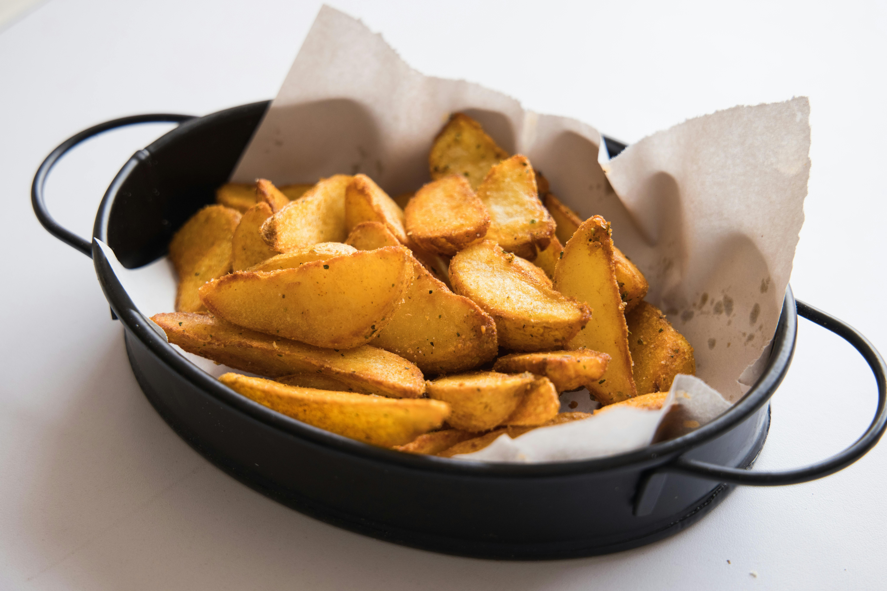

Herby roasted Potato Wedges

Prep Time: 10 mins
Cook Time: 1 hr
This recipe is an easy alternative to mashed potatoes or boiled potatoes. It is easy and good.
Ingredients:
- 5 large potatoes, peeled and cut into wedges
- ¼ cup vegetable oil
- ¼ cup chopped fresh parsley
- 1 tablespoon chopped fresh thyme
- 1 tablespoon chopped fresh oregano
- 1 teaspoon salt
- 1 teaspoon black pepper
Directions:
- Preheat oven to 450 degrees F (230 degrees C)
- In a large bowl, toss potato wedges with oil. Arrange in a single layer in a roasting pan.
- Bake in preheated oven for 50 minutes. Sprinkle with parsley, thyme, oregano, salt and pepper. Bake for 10 minutes, or until golden brown.